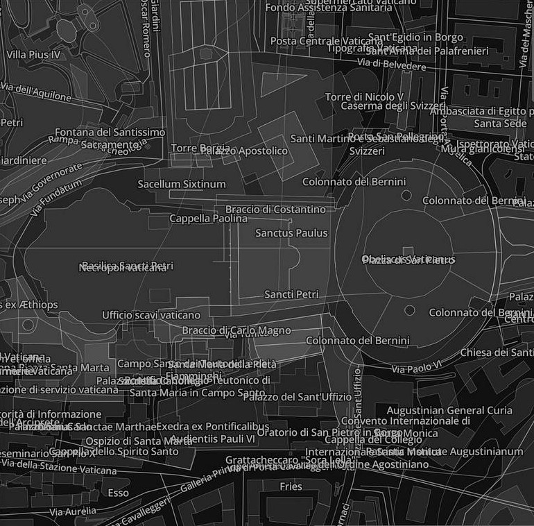

Making Tiled Maps Come Alive:
Leaflet Underneath
<node id="2699835935" lat="40.4205411" lon="-3.7060451">
<tag k="addr:city" v="Madrid"/>
<tag k="addr:housenumber" v="46"/>
<tag k="addr:postcode" v="28013"/>
<tag k="addr:street" v="Gran Vía"/>
<tag k="amenity" v="fast_food"/>
<tag k="cuisine" v="pizza"/>
<tag k="name" v="Papizza"/>
<tag k="website" v="http://www.papizza.es/"/>
</node>
OpenStreetMap node #2699835935
UTFGrid
Query
[out:json];
node
[amenity=bar]
(57.7,11.9,57.8,12.0);
out;
Result
{
...
"elements": [{
"type": "node",
"id": 2318390720,
"lat": 57.7064417,
"lon": 11.9643378,
"tags": {
"access": "private",
"amenity": "bar",
"name": "Göteborgs vinkällare",
"website": "http://www.gbgvin.se"
}
},
...
Vector Tiles

Leaflet Underneath
Leaflet Underneath
https://github.com/perliedman/leaflet-underneath
var pois = L.tileLayer.underneath('http://...', {
layers: ['poi_label'],
lazy: true,
zoomIn: 0
})
.addTo(map);
map.on('click', function(e) {
pois.query(e.latlng, function(err, results) {
...
});
});